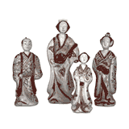

|
collection's history > Japanese section 2
Brief Chronology
| 1753 |
The founding collections include objects collected by Engelbert Kaempfer in Japan between 1690 and 1692, which were then acquired by Sir Hans Sloane |
| 1860 |
The BM begins actively collecting Japanese prints and ceramics (Sir Arthur Wollaston Franks) |
| 1881 |
The BM begins actively collecting Japanese paintings (William Anderson Collection) |
| 1913 |
Establishment of sub-Department of Oriental Prints and Drawings |
| 1933 |
Establishment of the Department of Oriental Antiqities |
| 1987 |
Establishment of Department of Japanese Antiquities |
| 1990 |
Opening of the Japanese Galleries and beginning of Japanese Exhibition Programme |
The Japanese Galleries
Seven hundred and fifty square metres of air-conditioned galleries were opened in 1990, with specially designed display cases. Light levels during exhibitions are strictly held to the low levels which are considered suitable in Japanese National Museums. In addition, a secure storage area for paintings, prints, lacquer and small organic sculpture is kept at an environment of 55% RH and 19 degrees C following best practice in Japan. The conditions of display meet those required by the Agency for Cultural Affairs, Tokyo, for loan of National Treasures. £5.5m was raised by committees in Japan and UK with the assistance of Boekikai (Japan Foreign Trade Council) and major donors include the Asashi Shimbun, the Konica Corporation, the Urasenke Foundation, and Brian and Esther Pilkington. The entire project was strongly supported by the Government of Japan, The Japan Foundation and The British Embassy in Tokyo, and the Galleries were inaugurated by HIH Prince Fumihito on 6 April 1990.
Exhibition History
Since 1990 a total of over 40 Japanese exhibitions have been mounted, sixteen of which included loan material from Japan. These have been, and will continue to be, the main focus for the display of traditional Japanese arts in the United Kingdom. Five of the major loans were organised in conjunction with Asahi Shimbun and several with the Agency for Cultural Affairs, Tokyo, and The Japan Foundation. Much of the cost of this programme has been met by Japanese co-organisers. Highlights include:
1990 Porcelain for Palaces
1991 Swords of the Samurai
1991 Kamakura: The Renaissance of Japanese Sculpture, 1185-
1333 (Japan Festival 1991)
1992 Nihonga: Traditional Japanese Painting, 1900-1940 (Japan Festival 1991)
1993 Demon of Painting: The Art of Kawanabe Kyosai, 1831-89
1994 Treasured Miniatures: Contemporary Netsuke
1995 The Passionate Art of Kitagawa Utamaro (d.1806)
1996 Kayama Matazo: New Triumphs for Old Traditions
1998 Rimpa Art from the Idemitsu Collection, Tokyo
2000 Saga: Contemporary Ceramics from the Home of Japanese Porcelain
2001 100 Views of Mount Fuji (Japan 2001)
2001 Shinto: The Sacred Art of Ancient Japan (Japan 2001)
2003 Kazari: Decoration and Display in Japan 15th-19th Centuries
1 2 3
|

Four Imari ware porcelain figures, from Japan Edo period, late 17th-19th century AD
|